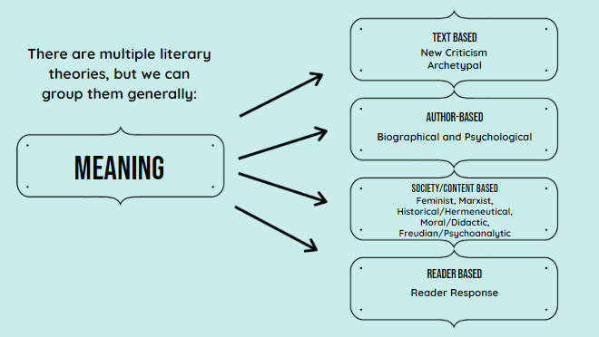

Literary Theories - Part I

|
Were any of the men wrong in the way they described the elephant? Introduction to Literary Theories
What is a Literary Theory and Why is it Important?
 |
Callout
Exploring Each Theory In-Depth
We’ll sample the theories by using the well-known story of “Cinderella.”

Text-Based Theories
This literary theory focuses on the text and avoid influence from outside meaning.
|
New Criticism |
Archetypal |
|
|
Applying Text-Based Theories to “Cinderella”
|
New Criticism |
Archetypal |
|
Example applied to the Two Stepsisters: |
Example applied to the Themes: |
|
In the story Cinderella, the main character has two stepsisters. The fact that there are two instead of one gives Cinderella a greater sense of being outnumbered and having no choice. |
Cinderella is about overcoming unjust oppression and receiving a triumphant reward, a universal tale of love and self-discovery and the power of true love to overcome all obstacles. |
Callout
Applying Text-Based Theories to “Cinderella”
|
New Criticism |
Archetypal |
|
Example applied to the Mice and Rats: |
Example applied to Cinderella versus her stepmother and stepsisters: |
|
They turned the mice and rats, which no one likes because they are "dirty,” into "a fine set of horses" and the rat into a coachman, which everyone wants. The same goes for Cinderella, and her transformation for the ball. |
It depicts very specific and sequential parts: the hope and desire for love, acceptance, aiming for a better social standing or standard of living, and good triumphant over evil. |
Applying Text-Based Theories to “Cinderella”
|
New Criticism |
|
Example applied to the Glass Slipper: |
|
Applying The New Criticism Lens
This literary theory focuses on the text and avoid influence from outside meaning.
Applying The New Criticism Lens
Accordion
Be Clear
- Your thesis statement should be obvious and clearly state your focus.
- Make sure to examine the text carefully. New Criticism is about close reading and providing specific examples to support your statement.
Include Specific Examples
- When analyzing your chosen text, include lots of specific examples to support your thesis statement.
- Be ready to explain what your evidence proves.
- Be careful not to cover too much. You can make a more in-depth analysis if you narrow your focus.
Use Hedge Words When Necessary
- You can use words such as “appears,” “perhaps,” “may,” and “suggests” when suggesting meaning.
- Don’t use words like “I think” or “In my opinion.”
- Individual interpretations are irrelevant when based on the text.
Do Not Talk About The Author
- This theory is focused on the text and not on the author.
- Focus on the meaning found solely inside the text.
Applying The Archetypal Lens
This literary theory assumes that there is a collection of symbols, images, characters, and motifs (i.e. archetypes) that evokes the same response in all people.
Common Examples of Literary Archetypes: Characters
- Lover - character guided by emotion and passion of the heart.
- Hero - a protagonist that rises to a challenge.
- Outlaw - rebellious character that goes against societal conventions.
- Innocent - character who is “pure” in terms of morality or intentions.
|
Can You Think of Characters and/or Stories Represented By Each Archetype?
|
Common Examples of Literary ArchetypesSituations
|